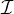
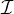
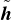

* is called an explanation function, where
* is the alphabet of G*, and ψ is the parameter of the
explanation function.
* is called an explanation function, where
* is the alphabet of G*, and ψ is the parameter of the
explanation function.
Generating In-Distribution Proxy Graphs for Explaining Graph Neural Networks
Zhuomin Chen 1 Jiaxing Zhang 2 Jingchao Ni 3 Xiaoting Li 4 Yuchen Bian 5 Md Mezbahul Islam 1 Ananda Mohan Mondal 1 Hua Wei 6 Dongsheng Luo 1
1Knight Foundation School of Computing and Information Sciences, Florida International University, Miami, USA 2New Jersey Institute of Technology, Newark, USA 3Department of Computer Science, University of Houston, Houston, USA 4Visa Research, USA 5Amazon Search A9, USA 6School of Computing and Augmented Intelligence, Arizona State University, Tempe, USA. Correspondence to: Zhuomin Chen <zchen051@fiu.edu>, Dongsheng Luo <dluo@fiu.edu>.
Proceedings of the 41st International Conference on Machine
Learning, Vienna, Austria. PMLR 235, 2024. Copyright 2024 by the
author(s).
Graph Neural Networks (GNNs) have become a building block in graph data processing, with wide applications in critical domains. The growing needs to deploy GNNs in high-stakes applications necessitate explainability for users in the decision-making processes. A popular paradigm for the explainability of GNNs is to identify explainable subgraphs by comparing their labels with the ones of original graphs. This task is challenging due to the substantial distributional shift from the original graphs in the training set to the set of explainable subgraphs, which prevents accurate prediction of labels with the subgraphs. To address it, in this paper, we propose a novel method that generates proxy graphs for explainable subgraphs that are in the distribution of training data. We introduce a parametric method that employs graph generators to produce proxy graphs. A new training objective based on information theory is designed to ensure that proxy graphs not only adhere to the distribution of training data but also preserve explanatory factors. Such generated proxy graphs can be reliably used to approximate the predictions of the labels of explainable subgraphs. Empirical evaluations across various datasets demonstrate our method achieves more accurate explanations for GNNs.
We systematically analyze and address the challenge of the OOD issue in explainable GNNs, which is pivotal for enhancing the reliability and interpretability of GNNs in real-world applications.
We introduce an innovative parametric method that incorporates graph auto-encoders to produce in-distributed proxy graphs that are both situated in the original data distribution and preserve essential explanation information. This facilitates more precise and interpretable explanations in GNN applications.
Through comprehensive experiments on various real-world datasets, we substantiate the effectiveness of our proposed approach, showcasing its practical utility and superiority in producing explanations.
 ,||}.
Following the existing works (Ying et al., 2019; Luo
et al., 2020; Yuan et al., 2022; Huang et al., 2024), the
explanation methods under consideration in this paper are
model/task agnostic and treat GNN models as black boxes —
i.e., the so-called post-hoc, instance-level explanation
methods. Formally, our research problem is described as
follows:
* is called an explanation function, where
* is the alphabet of G*, and ψ is the parameter of the
explanation function.
,||}.
Following the existing works (Ying et al., 2019; Luo
et al., 2020; Yuan et al., 2022; Huang et al., 2024), the
explanation methods under consideration in this paper are
model/task agnostic and treat GNN models as black boxes —
i.e., the so-called post-hoc, instance-level explanation
methods. Formally, our research problem is described as
follows:
* is called an explanation function, where
* is the alphabet of G*, and ψ is the parameter of the
explanation function.
| (1) |
| (2) |
| (3) |
 are drawn from
the distribution P and reformulate the estimation of P(Y |G′)
by marginalizing over the distribution of proxy graphs as
follows:
are drawn from
the distribution P and reformulate the estimation of P(Y |G′)
by marginalizing over the distribution of proxy graphs as
follows:
| (4) |
 instead of directly using G′. This
approach is particularly effective when the conditional
probability P(Y |⋅) is approximated by the model f(⋅). To
facilitate the maximization of the likelihood as outlined
in equation 4, we further approximate P(
instead of directly using G′. This
approach is particularly effective when the conditional
probability P(Y |⋅) is approximated by the model f(⋅). To
facilitate the maximization of the likelihood as outlined
in equation 4, we further approximate P( |G′) with a
parameterized function, denoted as Qϕ(
|G′) with a
parameterized function, denoted as Qϕ( |G′). The formal
representation is thus given by
|G′). The formal
representation is thus given by
| (5) |
 from the unknown distribution P,
which is necessary for calculating equation 5. To overcome
this challenge, we propose to approximate P with the
parameterized function Qϕ(
from the unknown distribution P,
which is necessary for calculating equation 5. To overcome
this challenge, we propose to approximate P with the
parameterized function Qϕ( |G′), and estimate equation 5
with a Monte Carlo estimator that samples proxy graphs from
Qϕ(|G′). That is
|G′), and estimate equation 5
with a Monte Carlo estimator that samples proxy graphs from
Qϕ(|G′). That is
| (6) |
| (7) |
 is sampled from a
distribution that approximates P, effectively addressing the
OOD challenge. The second constraint guarantees that
the label information preserved in
is sampled from a
distribution that approximates P, effectively addressing the
OOD challenge. The second constraint guarantees that
the label information preserved in  is similar to that in
G′. Therefore, combining equation 3, equation 6 and
equation 7, our proxy graph-induced objective function
becomes:
is similar to that in
G′. Therefore, combining equation 3, equation 6 and
equation 7, our proxy graph-induced objective function
becomes:
| (8) |
 |G′) and P. This leads to the development of a bi-level
optimization model. Formally, the model is expressed as
follows:
|G′) and P. This leads to the development of a bi-level
optimization model. Formally, the model is expressed as
follows:
| (9) |
| (10) |
| (11) |
 exp, for training the
explainer Ψ(⋅).
3.2. Derivation
of
Inner
Optimization
For the inner optimization objective, we implement the first
constraint by minimizing the distribution distance between
Qϕ(
exp, for training the
explainer Ψ(⋅).
3.2. Derivation
of
Inner
Optimization
For the inner optimization objective, we implement the first
constraint by minimizing the distribution distance between
Qϕ( |G′) and P. Under the Erdős–Rényi assumption, the
distribution loss is equivalent to the cross-entropy loss between
|G′) and P. Under the Erdős–Rényi assumption, the
distribution loss is equivalent to the cross-entropy loss between
 given G′ and G over the full adjacency matrix (Chen
et al., 2023b). Considering that G is usually sparse rather than
a fully connected graph, in practice, we adopt a weighted
version to emphasize more connected node pairs (Wang
et al., 2016). Formally, we have the following distribution
loss.
given G′ and G over the full adjacency matrix (Chen
et al., 2023b). Considering that G is usually sparse rather than
a fully connected graph, in practice, we adopt a weighted
version to emphasize more connected node pairs (Wang
et al., 2016). Formally, we have the following distribution
loss.
| (12) |
 uv is the probability of node pair (u,v) in
uv is the probability of node pair (u,v) in  , and β is a
hyper-parameter to for the trade-off between connected and
unconnected node pairs.
The second constraint requires the mutual information of Y
and
, and β is a
hyper-parameter to for the trade-off between connected and
unconnected node pairs.
The second constraint requires the mutual information of Y
and  is the same as that of Y and G′. Due to the OOD
problem, it is non-trivial to directly compute P(Y |G′) or
H(Y |G′). Instead, we implement this constraint with a
novel graph generator that
is the same as that of Y and G′. Due to the OOD
problem, it is non-trivial to directly compute P(Y |G′) or
H(Y |G′). Instead, we implement this constraint with a
novel graph generator that  is obtained by combining G′
and a non-explanatory subgraph (Zhang et al., 2023b).
In practice, we implement the non-explanatory part by
perturbing the residual subgraph G - G′. The intuition is
that if an explanation comprises label information, it is
unlikely to change the prediction by manipulating the
remaining non-explanatory part, which is widely adopted in the
literature (Fang et al., 2023a; Zheng et al., 2024).
is obtained by combining G′
and a non-explanatory subgraph (Zhang et al., 2023b).
In practice, we implement the non-explanatory part by
perturbing the residual subgraph G - G′. The intuition is
that if an explanation comprises label information, it is
unlikely to change the prediction by manipulating the
remaining non-explanatory part, which is widely adopted in the
literature (Fang et al., 2023a; Zheng et al., 2024).

| (13) |
| (14) |
| (15) |
| (16) |
 Δ ∈ℝn×n represents the adjacency matrix of the
perturbed non-explanatory subgraph. This novel use of
VGAE facilitates the generation of diverse yet representative
perturbations, crucial for enhancing the interpretability of
explainers in our proxy graph framework. The adjacency matrix
of a proxy graph is then obtained by
Δ ∈ℝn×n represents the adjacency matrix of the
perturbed non-explanatory subgraph. This novel use of
VGAE facilitates the generation of diverse yet representative
perturbations, crucial for enhancing the interpretability of
explainers in our proxy graph framework. The adjacency matrix
of a proxy graph is then obtained by
| (17) |
 (0,), where represents the identity matrix. Then, the
loss function is as follows.
(0,), where represents the identity matrix. Then, the
loss function is as follows.
| (18) |
dist is equivalent to cross-entropy between  and
G (Chen et al., 2023b). KL represents the KL divergence
between the distribution of the latent representations ZΔ
and the assumed Gaussian prior. This term is crucial for
regulating the variational aspect of the VGAE, ensuring that the
generated perturbations are meaningful and controlled. λ is a
hyper-parameter.
Alternate Training. To train the explainer and the proxy graph
generator networks, we follow existing works (Zheng
et al., 2024) to use an alternate training schedule that trains the
proxy graph generator network M times and then trains the
explainer network once. M is a hyper-parameter determined by
grid search. The detailed algorithm description of our model is
shown in Appendix B.
5. Related
Work
GNN Explanation. The goal of explainability in GNNs
is to ensure transparency in graph-based tasks. Recent
works have been directed towards elucidating the rationale
behind GNN predictions. These explanation methods can
be broadly classified into two categories: instance-level
and model-level approaches (Yuan et al., 2022). In this
study, we focus on instance-level explanations, which
aim to clarify the specific reasoning behind individual
predictions made by GNNs. These methods are critical for
understanding the decision-making process on a case-by-case
basis to enhance the explainability of GNNs. For example,
GNNExplainer (Ying et al., 2019) excludes certain edges and
node features to observe the changes in prediction. However, its
single-instance focus limits its applicability to provide a
global understanding of the to-be-explained model (Chen
et al., 2023a). PGExplainer (Luo et al., 2020; 2024)
introduces a parametric neural network to learn edge weights.
Thus, once training is complete, it can explain new graphs
without retraining. ReFine (Wang et al., 2021) integrates a
pre-training phase that focuses on class comparisons and is
fine-tuned to refine context-specific explanations. GStarX
(Zhang et al., 2022) assigns an importance score to each node
by caculating the Hamiache and Navarro values of the
structure to obtain explanatory subgraphs. GFlowExplainer
(Li et al., 2023) uses a generator to construct a TD-like
flow matching condition to learn a policy for generating
explanations by adding nodes sequentially.
Distribution Shifting in Explanations. The distribution
shifting problem in post-hoc explanations has been increasingly
recognized in explainable AI fields (Chang et al., 2019; Qiu
et al., 2022). For example, FIDO (Chang et al., 2019) works
on enhancing image classifier explanations, focusing on
relevant contextual details that agree with the training data’s
distribution. A recent study tackles the distribution shifting
problem in image explanations by introducing a module that
assesses the similarity between altered data and the original
dataset distribution (Qiu et al., 2022). In the graph domain, an
ad-hoc strategy to mitigate distribution shifting is to initially
reduce the size constraint coefficient during the explanation
process (Fang et al., 2023b). MixupExplainer (Zhang
et al., 2023b) and RegExplainer (Zhang et al., 2023a)
propose non-parametric solutions by mixing up the explanation
subgraph with a non-explainable part from another graph.
However, these methods operates under the assumption that the
explanatory and non-explanatory subgraphs in mixed graphs
are independent, which may not hold in many real-life
graphs.
6. Experiments
and
G (Chen et al., 2023b). KL represents the KL divergence
between the distribution of the latent representations ZΔ
and the assumed Gaussian prior. This term is crucial for
regulating the variational aspect of the VGAE, ensuring that the
generated perturbations are meaningful and controlled. λ is a
hyper-parameter.
Alternate Training. To train the explainer and the proxy graph
generator networks, we follow existing works (Zheng
et al., 2024) to use an alternate training schedule that trains the
proxy graph generator network M times and then trains the
explainer network once. M is a hyper-parameter determined by
grid search. The detailed algorithm description of our model is
shown in Appendix B.
5. Related
Work
GNN Explanation. The goal of explainability in GNNs
is to ensure transparency in graph-based tasks. Recent
works have been directed towards elucidating the rationale
behind GNN predictions. These explanation methods can
be broadly classified into two categories: instance-level
and model-level approaches (Yuan et al., 2022). In this
study, we focus on instance-level explanations, which
aim to clarify the specific reasoning behind individual
predictions made by GNNs. These methods are critical for
understanding the decision-making process on a case-by-case
basis to enhance the explainability of GNNs. For example,
GNNExplainer (Ying et al., 2019) excludes certain edges and
node features to observe the changes in prediction. However, its
single-instance focus limits its applicability to provide a
global understanding of the to-be-explained model (Chen
et al., 2023a). PGExplainer (Luo et al., 2020; 2024)
introduces a parametric neural network to learn edge weights.
Thus, once training is complete, it can explain new graphs
without retraining. ReFine (Wang et al., 2021) integrates a
pre-training phase that focuses on class comparisons and is
fine-tuned to refine context-specific explanations. GStarX
(Zhang et al., 2022) assigns an importance score to each node
by caculating the Hamiache and Navarro values of the
structure to obtain explanatory subgraphs. GFlowExplainer
(Li et al., 2023) uses a generator to construct a TD-like
flow matching condition to learn a policy for generating
explanations by adding nodes sequentially.
Distribution Shifting in Explanations. The distribution
shifting problem in post-hoc explanations has been increasingly
recognized in explainable AI fields (Chang et al., 2019; Qiu
et al., 2022). For example, FIDO (Chang et al., 2019) works
on enhancing image classifier explanations, focusing on
relevant contextual details that agree with the training data’s
distribution. A recent study tackles the distribution shifting
problem in image explanations by introducing a module that
assesses the similarity between altered data and the original
dataset distribution (Qiu et al., 2022). In the graph domain, an
ad-hoc strategy to mitigate distribution shifting is to initially
reduce the size constraint coefficient during the explanation
process (Fang et al., 2023b). MixupExplainer (Zhang
et al., 2023b) and RegExplainer (Zhang et al., 2023a)
propose non-parametric solutions by mixing up the explanation
subgraph with a non-explainable part from another graph.
However, these methods operates under the assumption that the
explanatory and non-explanatory subgraphs in mixed graphs
are independent, which may not hold in many real-life
graphs.
6. Experiments
|
| MUTAG | Benzene | Alkane-Carbonyl | Fluoride-Carbonyl | BA-2motifs | BA-3motifs |
| GradCAM | 0.727±0.000 | 0.740±0.000 | 0.448±0.000 | 0.694±0.000 | 0.714±0.000 | 0.709±0.000 |
| GNNExplainer | 0.682±0.009 | 0.485±0.001 | 0.551±0.003 | 0.574±0.002 | 0.644±0.007 | 0.511±0.002 |
| PGExplainer | 0.832±0.032 | 0.793±0.054 | 0.660±0.036 | 0.702±0.018 | 0.734±0.117 | 0.796±0.010 |
| ReFine | 0.612±0.004 | 0.606±0.002 | 0.768±0.001 | 0.571±0.000 | 0.698±0.001 | 0.629±0.005 |
| MixupExplainer | 0.863±0.103 | 0.611±0.032 | 0.811±0.006 | 0.706±0.013 | 0.906±0.059 | 0.859±0.019 |
| ProxyExplainer | 0.977±0.009 | 0.845±0.036 | 0.934±0.005 | 0.758±0.068 | 0.935±0.008 | 0.960±0.008 |
|
| MUTAG | BA-2motifs |
| GradCAM | 0.247±0.000 | 0.664±0.000 |
| GNNExplainer | 0.232±0.001 | 0.608±0.004 |
| PGExplainer | 0.611±0.024 | 0.682±0.117 |
| ReFine | 0.227±0.001 | 0.619±0.002 |
| MixupExplainer | 0.647±0.083 | 0.787±0.073 |
| ProxyExplainer | 0.756±0.107 | 0.839±0.036 |
|
| MUTAG | BA-2motifs | ||
|
| Fid α1,+ ↑ | Fidα2,-↓ | Fidα1,+ ↑ | Fidα2,-↓ |
| GradCAM | 0.004±0.000 | 0.162±0.000 | 0.072±0.000 | 0.107±0.000 |
| GNNExp. | 0.031±0.001 | 0.148±0.001 | 0.057±0.002 | 0.132±0.001 |
| PGExp. | 0.034±0.011 | 0.148±0.005 | 0.065±0.017 | 0.126±0.009 |
| ReFine | 0.003±0.000 | 0.160±0.001 | 0.060±0.005 | 0.125±0.001 |
| MixupExp. | 0.037±0.006 | 0.146±0.003 | 0.074±0.005 | 0.112±0.003 |
| ProxyExp. | 0.040±0.002 | 0.145±0.001 | 0.086±0.003 | 0.106±0.002 |
RQ1: Can the proposed framework outperform other baselines in identifying explanations for GNNs?
RQ2: Is the distribution shifting severe in explanation subgraphs? Can the proposed approach alleviate that?
RQ3: How does each component of ProxyExplainer impact the overall performance in generating explanations?
| MUTAG | Benzene | Alkane-Carbonyl
| |||||||
| Metric | GT | PGE | Proxy | GT | PGE | Proxy | GT | PGE | Proxy |
| Deg. | 0.614 | 0.468 | 0.123 | 0.843 | 0.393 | 0.236 | 0.872 | 0.665 | 0.177 |
| Clus. | 0.003 | 0.003 | 0.009 | 0.009 | 0.002 | 0.004 | 0.011 | 0.011 | 0.011 |
| Spec. | 0.414 | 0.341 | 0.186 | 0.295 | 0.163 | 0.101 | 0.596 | 0.447 | 0.049 |
| Sum. | 1.032 | 0.813 | 0.317 | 1.147 | 0.558 | 0.341 | 1.479 | 1.123 | 0.237 |
| Fluoride-Carbonyl | BA-2motifs | BA-3motifs
| |||||||
| Metric | GT | PGE | Proxy | GT | PGE | Proxy | GT | PGE | Proxy |
| Deg. | 0.638 | 0.488 | 0.196 | 0.759 | 0.496 | 0.060 | 0.541 | 0.149 | 0.092 |
| Clus. | 0.012 | 0.012 | 0.012 | 0.447 | 0.463 | 0.584 | 0.262 | 0.382 | 0.245 |
| Spec. | 0.351 | 0.315 | 0.100 | 0.245 | 0.256 | 0.091 | 0.217 | 0.063 | 0.062 |
| Sum. | 1.000 | 0.815 | 0.308 | 1.451 | 1.215 | 0.735 | 1.020 | 0.594 | 0.399 |
KL: in this variant, we remove the KL divergence from
the training loss in ProxyExplainer; (3) w/o dist: in this
variant, we remove the distribution loss from ProxyExplainer.
The results of the ablation study on MUTAG and BA-2motifs
are reported in Figure 3.
Figure 3 illustrates a notable performance drop for all variants,
indicating that each component contributes positively to the
effectiveness of ProxyExplainer. Especially, in the real-life
dataset MUTAG, without the in-distribution constraint, w/o
dist is much worse than ProxyExplainer, indicating the vital
role of in-distributed proxy graphs in our framework. Extensive
ablation studies on other datasets can be found in the Appendix
D.2.
This paper presents work whose goal is to advance the field of Machine Learning. There are many potential societal consequences of our work, none of which we feel must be specifically highlighted here.
This project was partially supported by NSF grant IIS-2331908. The views and conclusions contained in this paper are those of the authors and should not be interpreted as representing any funding agencies.
Amara, K., El-Assady, M., and Ying, R. Ginx-eval: Towards in-distribution evaluation of graph neural network explanations. arXiv preprint arXiv:2309.16223, 2023.
Bank, D., Koenigstein, N., and Giryes, R. Autoencoders. Machine learning for data science handbook: data mining and knowledge discovery handbook, pp. 353–374, 2023.
Chang, C.-H., Creager, E., Goldenberg, A., and Duvenaud, D. Explaining image classifiers by counterfactual generation. In International Conference on Learning Representations, 2019. URL https://openreview.net/forum?id=B1MXz20cYQ.
Chen, J., Amara, K., Yu, J., and Ying, R. Generative explanations for graph neural network: Methods and evaluations. arXiv preprint arXiv:2311.05764, 2023a.
Chen, J., Wu, S., Gupta, A., and Ying, Z. D4explainer: In-distribution explanations of graph neural network via discrete denoising diffusion. In Thirty-seventh Conference on Neural Information Processing Systems, 2023b. URL https://openreview.net/forum?id=GJtP1ZEzua.
Debnath, A. K., Lopez de Compadre, R. L., Debnath, G., Shusterman, A. J., and Hansch, C. Structure-activity relationship of mutagenic aromatic and heteroaromatic nitro compounds. correlation with molecular orbital energies and hydrophobicity. Journal of medicinal chemistry, 34(2):786–797, 1991.
Erdős, P., Rényi, A., et al. On the evolution of random graphs. Publ. math. inst. hung. acad. sci, 5(1):17–60, 1960.
Fang, J., Liu, W., Gao, Y., Liu, Z., Zhang, A., Wang, X., and He, X. Evaluating post-hoc explanations for graph neural networks via robustness analysis. In Thirty-seventh Conference on Neural Information Processing Systems, 2023a.
Fang, J., Liu, W., Zhang, A., Wang, X., He, X., Wang, K., and Chua, T.-S. On regularization for explaining graph neural networks: An information theory perspective, 2023b. URL https://openreview.net/forum?id=5rX7M4wa2R_.
Fang, J., Wang, X., Zhang, A., Liu, Z., He, X., and Chua, T.-S. Cooperative explanations of graph neural networks. In Proceedings of the Sixteenth ACM International Conference on Web Search and Data Mining, pp. 616–624, 2023c.
Hamilton, W., Ying, Z., and Leskovec, J. Inductive representation learning on large graphs. In Advances in Neural Information Processing Systems, volume 30, 2017.
Huang, R., Shirani, F., and Luo, D. Factorized explainer for graph neural networks. In Proceedings of the AAAI conference on artificial intelligence, 2024.
Jang, E., Gu, S., and Poole, B. Categorical reparameterization with gumbel-softmax. In International Conference on Learning Representations, 2017. URL https://openreview.net/forum?id=rkE3y85ee.
Kazius, J., McGuire, R., and Bursi, R. Derivation and validation of toxicophores for mutagenicity prediction. Journal of medicinal chemistry, 48(1):312–320, 2005.
Kingma, D. P. and Ba, J. Adam: A method for stochastic optimization. arXiv preprint arXiv:1412.6980, 2014.
Kipf, T. N. and Welling, M. Semi-supervised classification with graph convolutional networks. In International Conference on Learning Representations, 2017. URL https://openreview.net/forum?id=SJU4ayYgl.
Li, W., Li, Y., Li, Z., HAO, J., and Pang, Y. DAG matters! GFlownets enhanced explainer for graph neural networks. In The Eleventh International Conference on Learning Representations, 2023. URL https://openreview.net/forum?id=jgmuRzM-sb6.
Li, Y., Zhou, J., Verma, S., and Chen, F. A survey of explainable graph neural networks: Taxonomy and evaluation metrics. arXiv preprint arXiv:2207.12599, 2022.
Luo, D., Cheng, W., Xu, D., Yu, W., Zong, B., Chen, H., and Zhang, X. Parameterized explainer for graph neural network. Advances in neural information processing systems, 33:19620–19631, 2020.
Luo, D., Zhao, T., Cheng, W., Xu, D., Han, F., Yu, W., Liu, X., Chen, H., and Zhang, X. Towards inductive and efficient explanations for graph neural networks. IEEE Transactions on Pattern Analysis and Machine Intelligence, 2024.
Maddison, C. J., Mnih, A., and Teh, Y. W. The concrete distribution: A continuous relaxation of discrete random variables. In International Conference on Learning Representations, 2017. URL https://openreview.net/forum?id=S1jE5L5gl.
Miao, S., Liu, M., and Li, P. Interpretable and generalizable graph learning via stochastic attention mechanism. In International Conference on Machine Learning, pp. 15524–15543. PMLR, 2022.
Pope, P. E., Kolouri, S., Rostami, M., Martin, C. E., and Hoffmann, H. Explainability methods for graph convolutional neural networks. In Proceedings of the IEEE/CVF conference on computer vision and pattern recognition, pp. 10772–10781, 2019.
Qiu, L., Yang, Y., Cao, C. C., Zheng, Y., Ngai, H., Hsiao, J., and Chen, L. Generating perturbation-based explanations with robustness to out-of-distribution data. In Proceedings of the ACM Web Conference 2022, pp. 3594–3605, 2022.
Sanchez-Lengeling, B., Wei, J., Lee, B., Reif, E., Wang, P., Qian, W., McCloskey, K., Colwell, L., and Wiltschko, A. Evaluating attribution for graph neural networks. Advances in neural information processing systems, 33: 5898–5910, 2020.
Scarselli, F., Gori, M., Tsoi, A. C., Hagenbuchner, M., and Monfardini, G. The graph neural network model. IEEE transactions on neural networks, 20(1):61–80, 2008.
Sterling, T. and Irwin, J. J. ZINC 15 - ligand discovery for everyone. J. Chem. Inf. Model., 55(11):2324–2337, 2015.
Tishby, N., Pereira, F. C., and Bialek, W. The information bottleneck method. arXiv preprint physics/0004057, 2000.
Veličković, P., Cucurull, G., Casanova, A., Romero, A., Liò, P., and Bengio, Y. Graph attention networks. In International Conference on Learning Representations, 2018. URL https://openreview.net/forum?id=rJXMpikCZ.
Wang, D., Cui, P., and Zhu, W. Structural deep network embedding. In Proceedings of the 22nd ACM SIGKDD international conference on Knowledge discovery and data mining, pp. 1225–1234, 2016.
Wang, X., Wu, Y., Zhang, A., He, X., and Chua, T.-S. Towards multi-grained explainability for graph neural networks. In Advances in Neural Information Processing Systems, volume 34, pp. 18446–18458, 2021.
Wu, B., Li, J., Yu, J., Bian, Y., Zhang, H., Chen, C., Hou, C., Fu, G., Chen, L., Xu, T., et al. A survey of trustworthy graph learning: Reliability, explainability, and privacy protection. arXiv preprint arXiv:2205.10014, 2022.
Wu, T., Ren, H., Li, P., and Leskovec, J. Graph information bottleneck. Advances in Neural Information Processing Systems, 33:20437–20448, 2020.
Xu, K., Hu, W., Leskovec, J., and Jegelka, S. How powerful are graph neural networks? In International Conference on Learning Representations, 2019. URL https://openreview.net/forum?id=ryGs6iA5Km.
Ying, Z., Bourgeois, D., You, J., Zitnik, M., and Leskovec, J. Gnnexplainer: Generating explanations for graph neural networks. Advances in neural information processing systems, 32, 2019.
Yuan, H., Yu, H., Wang, J., Li, K., and Ji, S. On explainability of graph neural networks via subgraph explorations. In International Conference on Machine Learning, pp. 12241–12252. PMLR, 2021.
Yuan, H., Yu, H., Gui, S., and Ji, S. Explainability in graph neural networks: A taxonomic survey. IEEE Transactions on Pattern Analysis and Machine Intelligence, 2022.
Zhang, H., Wu, B., Yuan, X., Pan, S., Tong, H., and Pei, J. Trustworthy graph neural networks: Aspects, methods, and trends. Proceedings of the IEEE, 112(2):97–139, 2024. doi: 10.1109/JPROC.2024.3369017.
Zhang, J., Chen, Z., Luo, D., Wei, H., et al. Regexplainer: Generating explanations for graph neural networks in regression tasks. In The Second Learning on Graphs Conference, 2023a.
Zhang, J., Luo, D., and Wei, H. Mixupexplainer: Generalizing explanations for graph neural networks with data augmentation. In Proceedings of the 29th ACM SIGKDD Conference on Knowledge Discovery and Data Mining, pp. 3286–3296, 2023b.
Zhang, S., Liu, Y., Shah, N., and Sun, Y. Gstarx: Explaining graph neural networks with structure-aware cooperative games. In Advances in Neural Information Processing Systems, volume 35, pp. 19810–19823, 2022.
Zheng, X., Shirani, F., Wang, T., Cheng, W., Chen, Z., Chen, H., Wei, H., and Luo, D. Towards robust fidelity for evaluating explainability of graph neural networks. In The Twelfth International Conference on Learning Representations, 2024. URL https://openreview.net/forum?id=up6hr4hIQH.
| Symbols | Descriptions |
|
| A set of graphs |
| G,, | Graph instance, node set, edge set |
| vi | The i-th node |
| X | Node feature matrix |
| A | Adjacency matrix |
| Z | Node representation matrix |
| Y | Label of graph G |
|
| A set of labels |
| G* | Optimal explanatory subgraph |
| * | A set of G* |
| G′ | Candidate explanatory subgraph |
| GΔ | Non-explanatory graph |
|
| Proxy graph of G′ with a fixed distribution |
| h, h′,  | Graph embeddings |
| d | Dimension of node feature |
| f(⋅) | To-be-explained GNN model |
| Ψψ(⋅) | Explanation function |
| ψ | Parameter of the explanation function |
| P | Distribution of original training graphs |
| P′ | Distribution of explanation subgraphs |
| Qϕ | Parameterized function of P( |
| ϕ | Model parameters of Qϕ |
| ϕ* | Optimal ϕ |
| α | Balance parameter between I(G,G′) and I(Y,G′) |
|
| The set of node pairs that are unconnected in G |
|
| Probability of node pair (u,v) in |
| β | A hyper-parameter to get a trade-off between connected and unconnected node pairs |
| fenc(⋅) | The front part of GNNs that learns node representations |
| fcls(⋅) | The back part of GNNs that predicts graph labels based on node embeddings |
| σ(⋅) | Sigmoid function |
| τ | Temperature hyper-parameter for approximation |
| λ | A hyper-parameter in Proxy loss function |
|
| Distribution loss between |
|
| KL divergence between distribution of ZΔ and its prior |
|
| Proxy loss |
|
| Explainer loss |
 iΔ, from the non-explainable subgraph GiΔ. The proxy graph,
iΔ, from the non-explainable subgraph GiΔ. The proxy graph,  i, is obtained by combining
them, whose adjacency matrix can be denoted by
i, is obtained by combining
them, whose adjacency matrix can be denoted by  i =
i =  ′i +
′i +  iΔ. Here
iΔ. Here  ′i and
′i and  iΔ are adjacency matrices
of
iΔ are adjacency matrices
of  ′i and
′i and  iΔ, respectively. We alternatively train the explainer model and proxy graph generator as shown in
Algorithm 1.
iΔ, respectively. We alternatively train the explainer model and proxy graph generator as shown in
Algorithm 1.
 ′i with equation 14
′i with equation 14
 iΔ with equation 16
proxy with equation 18
exp
iΔ with equation 16
proxy with equation 18
exp
|
| MUTAG | Benzene | Alkane-Carbonyl | Fluoride-Carbonyl | BA-2motifs | BA-3motifs |
| Graphs | 4,337 | 12,000 | 4,326 | 8,671 | 1,000 | 3,000 |
| Average nodes | 29.15 | 20.58 | 21.13 | 21.36 | 25.00 | 21.92 |
| Average edges | 60.83 | 43.65 | 44.95 | 45.37 | 25.48 | 29.51 |
| Node features | 14 | 14 | 14 | 14 | 10 | 4 |
| Original graph |
|
|
|
| ||
| Ground truth explanation |
|
|
|
| ||
|
| NH2, NO2 | Benzene Ring | Alkane,C=O | F-,C=O | House, cycle | House,cycle, grid |
|
| MUTAG | Benzene | Alkane-Carbonyl | Fluoride-Carbonyl | BA-2motifs | BA-3motifs |
| Train Acc | 0.850 | 0.930 | 0.979 | 0.951 | 0.999 | 0.997 |
| Val Acc | 0.834 | 0.927 | 0.986 | 0.956 | 1.0 | 0.997 |
| Test Acc | 0.804 | 0.915 | 0.975 | 0.951 | 1.0 | 0.977 |
GradCAM (Pope et al., 2019). This method utilizes gradients as a weighting mechanism to merge various feature maps. It operates on heuristic assumptions and cannot elucidate node classification models.
GNNExplainer (Ying et al., 2019). It learns soft masks for edges and node features, and aims to elucidate predictions through mask optimization. GNNExplainer integrates these masks with the original graph through element-wise multiplications. The masks are optimized by enhancing the mutual information between the original graph and the modified graph prediction results.
PGExplainer (Luo et al., 2020). This method extends the idea of GNNExplainer by assuming that the graph is a random Gilbert graph. PGExplainer generates each edge embedding by combining the embeddings of its constituent nodes, then uses these edge embeddings to determine a Bernoulli distribution to indicate whether to mask an edge or not, and utilizes a Gumbel-Softmax approach to model the Bernoulli distribution for end-to-end training.
ReFine (Wang et al., 2021). ReFine identifies the edge probabilities for the entire category by maximizing the mutual information and contrastive loss between categories. In fine-tuning, it uses the edge probabilities from the previous stage to sample edges, and find explanations that maximize mutual information for specific instances.
MixupExplainer (Zhang et al., 2023b). This method combines original explanatory subgraphs with randomly sampled, label-independent base graphs in a non-parametric way to mitigate the common OOD issue which found in previous methods.
 . Notably, our proxy graph embedding
. Notably, our proxy graph embedding  exhibits higher Cosine
similarity scores and lower Euclidean distance with the original graph embedding h compared to the ground truth
explanation embedding h′. We observe an average improvement of 19.5% in Cosine similarity and 35.6% in Euclidean
distance. Particularly in the BA-2motifs dataset, there is a significant improvement of 60.4% in Cosine similarity and
51.8% in Euclidean distance. These findings underscore the effectiveness of our ProxyExplainer method in mitigating
distribution shifts caused by induction bias in the to-be-explained GNN model f(⋅), thereby enhancing explanation
performance.
exhibits higher Cosine
similarity scores and lower Euclidean distance with the original graph embedding h compared to the ground truth
explanation embedding h′. We observe an average improvement of 19.5% in Cosine similarity and 35.6% in Euclidean
distance. Particularly in the BA-2motifs dataset, there is a significant improvement of 60.4% in Cosine similarity and
51.8% in Euclidean distance. These findings underscore the effectiveness of our ProxyExplainer method in mitigating
distribution shifts caused by induction bias in the to-be-explained GNN model f(⋅), thereby enhancing explanation
performance.
 on different datasets.
on different datasets. |
| MUTAG | Benzene | Alkane-Carbonyl | Fluoride-Carbonyl | BA-2motifs | BA-3motifs |
| Avg. Cosine(h, h′) ↑ | 0.883 | 0.835 | 0.889 | 0.904 | 0.571 | 0.686 |
| Avg. Cosine(h, ) ↑ | 0.985 | 0.905 | 0.938 | 0.908 | 0.916 | 0.918 |
| Avg. Euclidean(h, h′) ↓ | 0.975 | 1.010 | 0.940 | 0.806 | 1.210 | 1.199 |
| Avg. Euclidean(h, | 0.368 | 0.767 | 0.719 | 0.779 | 0.583 | 0.613 |
 .
.
 .
.


 and
and  )
)